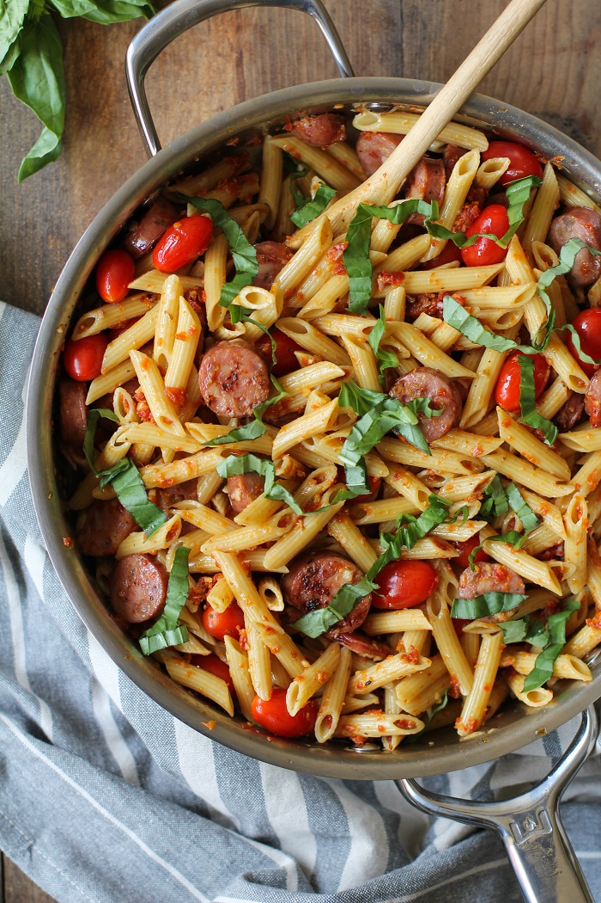

<>
Sausage pesto Pasta

This pasta dish is ready in just over 30 minutes and great for busy weeknights. I decided to use DeLallo's Casarecce Pasta for this recipe - the twists are perfect with this sauce! I love to use more unusual pasta shapes once in a while... it's one of those little things that puts a little pep in my dinner step
Ingredients
- Basil Pesto jar
- Penne Pasta
- Italian hot sausage
- Sun-dried tomatoes
- Peppers
- Black Pepper
- Oregano
Steps
- First boil the pasta according to the pasta manufacturer.(Add salt and olive oil to make the pasta a bit tastier).
- Keep the pasta aside after draining it on cold water.
- Prepare and slice the sausages.
- Slice the peppers and pan fry it till tender.
- Add sausage and stir fry it for a couple of minutes
- Next add the pasta stir it and then add basil pesto, sun-dried tomatoes and stir it till everything is evenly coated.
- Your sausage pesto pasta is ready. Before serving, add a bit of black pepper, oregano and serve.